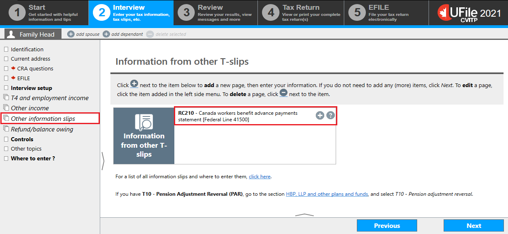
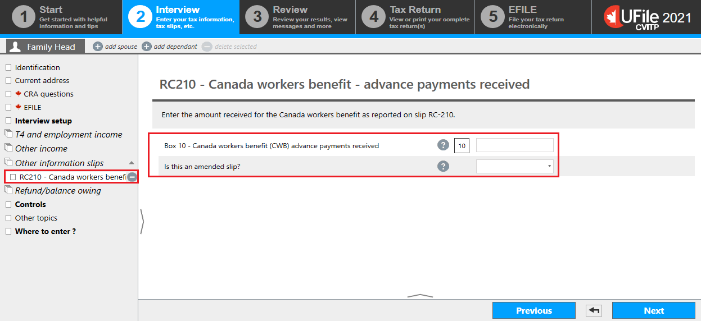
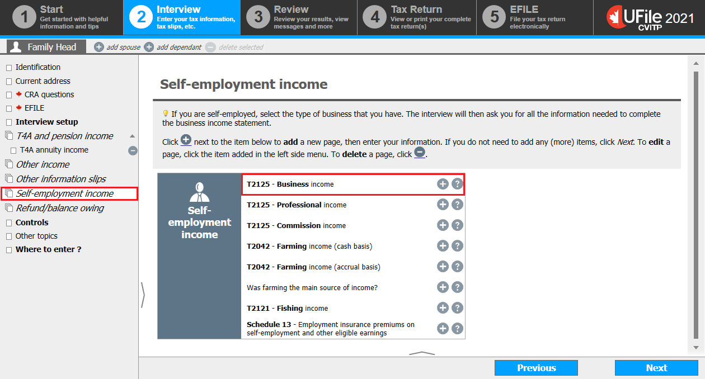
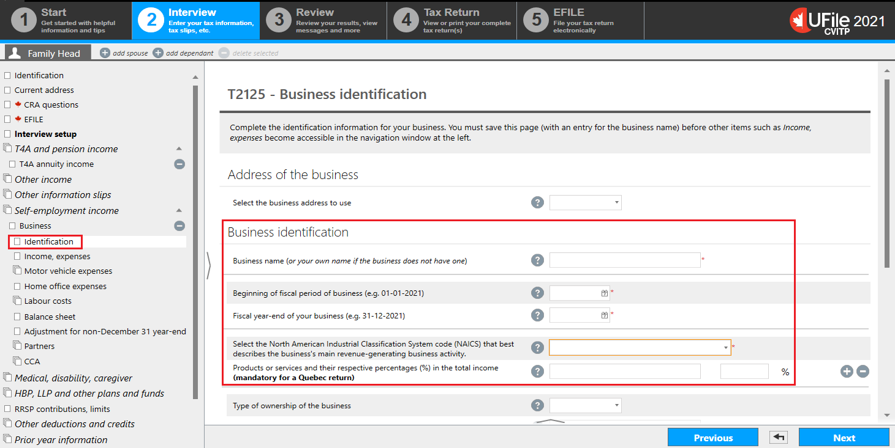
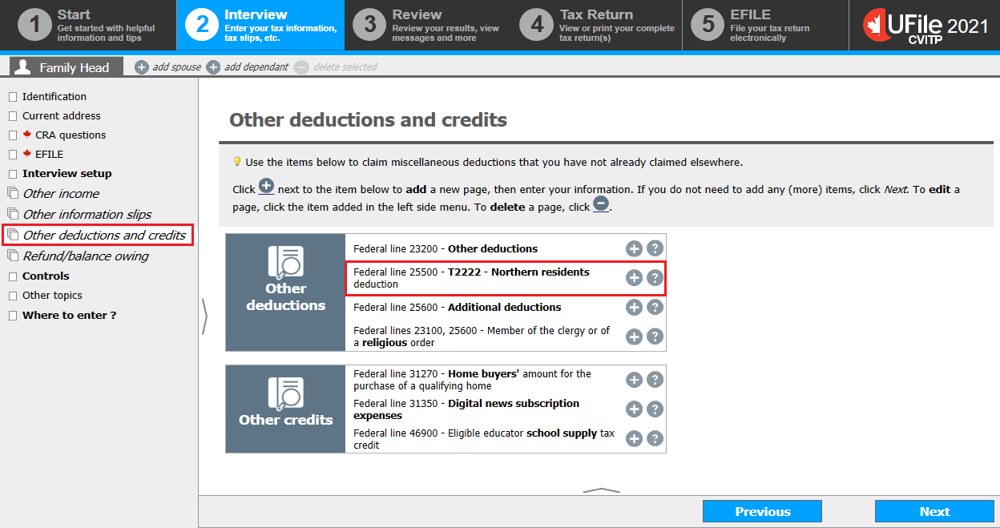
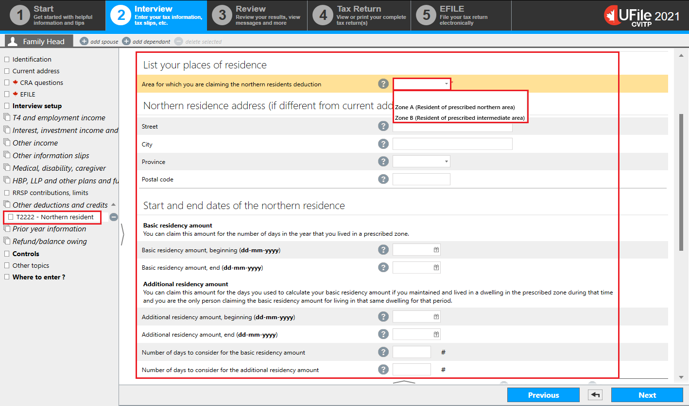
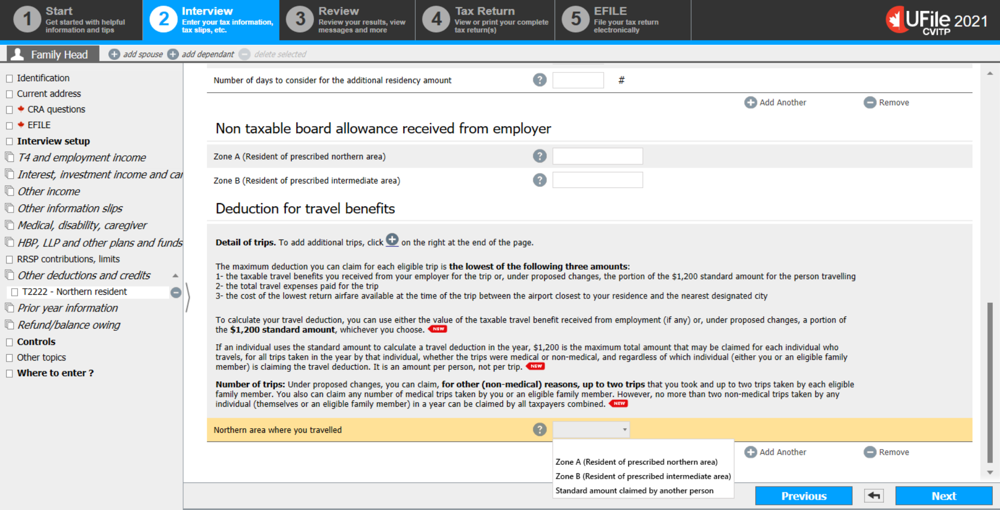
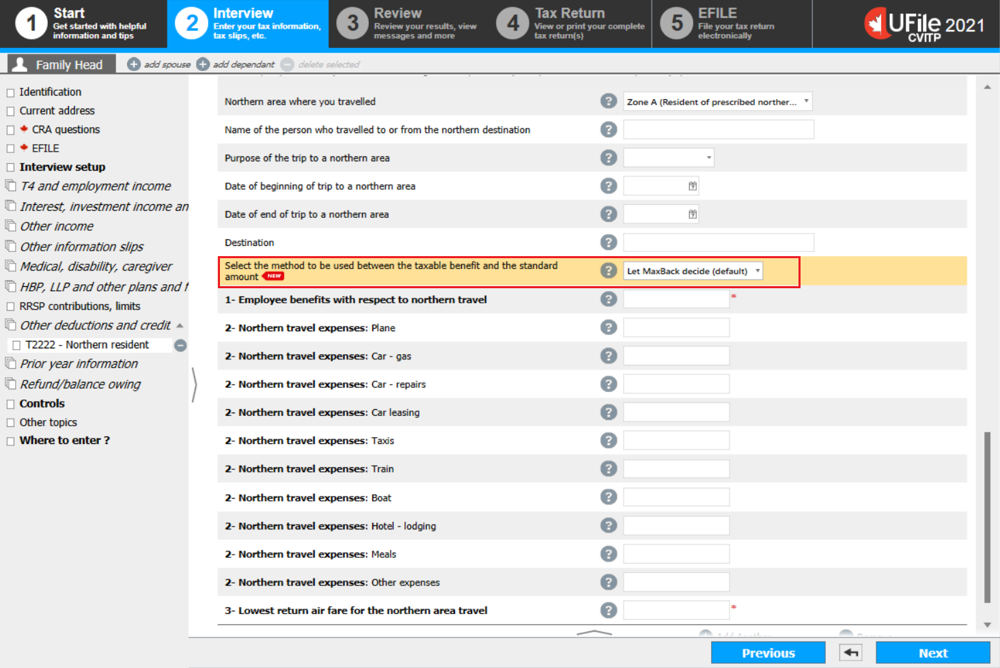
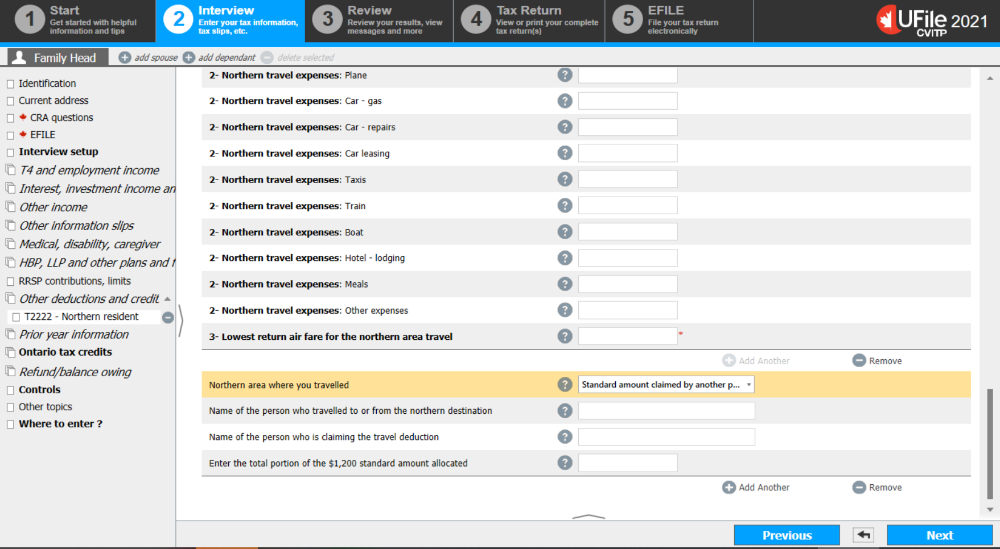
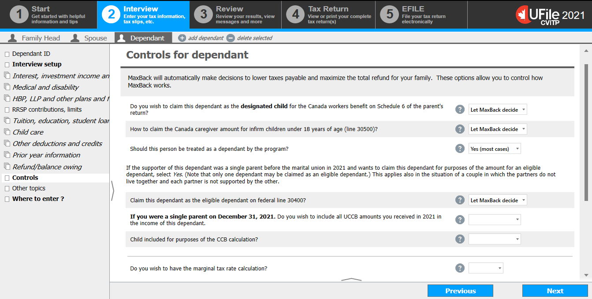

Interview setup

Text version of this screenshot
UFile Screen
Under Interview tab
Family Head sub-tab
Interview setup topic is highlighted
Other information slips topic is highlighted
Controls topic is highlighted
Other topics section is highlighted
Other deductions and credits (including school supply and home buyers’ amount) is highlighted
Self-employment section is highlighted
Self-employed business income is highlighted
Residency information for tax administration agreements

Text version of this screenshot
UFile screen
Under Interview tab
Family Head sub-tab
CRA questions topic
Canada Revenue Agency (CRA) questions page
- Residency information for tax administration agreements
- depending on the province you selected in the Identification section, the question and possible answers may vary
- once you read and answer the questions, click Next
RC210 - Canada workers benefit advance payments received
Text version of this screenshot
UFile screen
Under Interview tab
Family Head sub-tab
Other information slips topic is highlighted
Information from other T-slips page
RC210 – Canada workers benefit advance payments statement [Federal line 41500] is highlighted
- click the + sign next to RC210 – Canada workers benefit advance payments statement [Federal line 41500]
RC210 - Canada workers benefit - advance payments received
Text version of this screenshot
UFile screen
Under Interview tab
Family Head sub-tab
RC210 – Canada workers benefit – advance rec’d topic is highlighted
RC210 – Canada workers benefit – advance payments received page
Box 10 – Canada workers benefit (CWB) advance payments received is highlighted
Is this an amended slip? is highlighted
- enter the amount from box 10 of the RC210 slip into the matching field
- select the applicable option from the Is this an amended slip? drop-down menu
- click Next
Self-employment income
Text version of this screenshot
UFile screen
Under Interview tab
Family Head sub-tab
Self-employment income topic is highlighted
Self-employment income page
T2125 – Business income is highlighted
- click Self-employment income in the left-side menu
- click the + sign next to T2125 – Business income or T2125 – Professional or T2125 – Commission income
T2125 - Business identification
Text version of this screenshot
UFile screen
Under Interview tab
Family Head sub-tab
Identification topic under business is highlighted
T2125- Business identification page
Business identification section is highlighted
- complete the Business identification section as follows:
- Business name: enter the individual’s name
- Beginning of fiscal period of business: enter January 1 of the tax year in the presented format
- Fiscal year-end of your business: enter December 31 of the tax year in the presented format
- Select the North American Industry Classification System code (NAICS): select the most appropriate option from the drop-down menu
- Products or services and their respective percentages (%) in the total income (mandatory for a Quebec return): enter the type of service that the individual performed to earn the income (for the CVITP, enter 100% for the respective percentage)
Ufile tip
The NAICS code is mandatory. However, the tax return is still accepted and assessed even if an incorrect code is selected.
- click Next
T2125 - Business

Text version of this screenshot
UFile screen
Under Interview tab
Family Head sub-tab
Income, Expenses topic
T2125 – Business page
Business income section
- if applicable, enter the total tax-exempt amount from box 048 for all T4A slips in the Amount of net business income (loss) exempt from tax under section 87 of the Indian Act field
- complete the Business income section as follows:
- enter the total amount from box 048 for all T4A slips in the Fees for services (T4A Box 048) field
- enter the T4A tax slip
Other deductions and credits
Text version of this screenshot
UFile screen
Under Interview tab
Family Head sub-tab
Other deductions and credits topic is highlighted
Other deductions and credits page
Federal line 25500 – T2222 – Northern residents deduction is highlighted
- click Other deductions and credits in the left-side menu
Northern residents – List of prescribed zones

Text version of this screenshot
UFile screen
Under Interview tab
Family Head sub-tab
Other deductions and credits topic
Other deductions and credits page
UFile help – Northern residents deduction is highlighted
- a help window opens that provides a link to access the list
- close the window after consulting the list
T2222 – Northern residents deduction, Residency deduction
Text version of this screenshot
UFile screen
Under Interview tab
Family Head sub-tab
T2222 – Northern resident topic is highlighted
Residency deduction – List your places of residence section is highlighted
Area for which you are claiming the northern residents deduction is highlighted with the following drop-down options:
Zone A (Resident of prescribed northern area)
Zone B (Resident of prescribed intermediate area)
- List your places of residence
- select the area for which the individual is claiming the northern residents deduction, Zone A or Zone B
- enter the northern residence address for which the individual is making a claim, if different from their current address
- Start and end dates of the northern residence
- enter the dates the individual resided in the northern area
- enter the number of days for which the individual claimed both the basic and the additional residency amount
The tax software does not calculate the additional residency amount if you do not enter a number in the Number of days to consider for the additional residency amount field.
T2222 – Northern residents deduction, Deduction for travel benefits
Text version of this screenshot
UFile screen
Under Interview tab
Family Head sub-tab
T2222 – Northern resident topic
Deduction for travel benefits section
Northern area where you traveled drop-down menu opened to show following options:
Zone A (Resident of prescribed northern area)
Zone B (Resident of prescribed intermediate area)
Standard amount claimed by another person
- scroll down to the Deduction for travel benefits section
- select the option that applies to either the individual or the person they are claiming this deduction for, from the Northern area where you travelled drop-down menu
- select only Zone A or Zone B
- once a selection is made, additional fields are generated below
- select the option that applies to either the individual or the person they are claiming this deduction for, from the Northern area where you travelled drop-down menu
T2222 – Northern residents deduction, Deduction for travel benefits
Text version of this screenshot
UFile screen
Under Interview tab
Family Head sub-tab
T2222 – Northern resident topic
Select the method to be used between the taxable benefit and the standard amount is highlighted
Let MaxBack decide (default) is highlighted
- enter the name of the person who travelled: last name, comma, first name
- select the purpose of the trip: Medical reasons or Other
- enter the dates of the travel
- enter the destination: you may enter a city name only
- if the $1,200 standard amount is not being claimed for this individual, select Let MaxBack decide (default) from the Select the method to be used between the taxable benefit and the standard amount drop-down menu
- If the $1,200 standard amount is being claimed for this individual, select Use the standard amount of $1,200 from the Select the method to be used between the taxable benefit and the standard amount drop-down menu.
- you must enter an amount, even if it is 0, into the following fields:
- Employee benefits with respect to northern travel
- All the northern travel expenses (at least one field)
- Lowest return air fare for the northern area travel, which is the lowest cost quoted for a flight from the airport closest to the individual's residence to the nearest designated city (even if they did not actually travel by air or to that city)
- for each additional trip, click on the + sign next to Add Another, and an additional Details of trips section opens
T2222 – Northern residents deduction, Deduction for travel benefits – Standard amount claimed by another person
Text version of this screenshot
UFile screen
Under Interview tab
Family Head sub-tab
T2222 – Northern resident topic
Northern area where you traveled is highlighted
Standard amount claimed by another p… is highlighted
- if the $1,200 standard amount (or a portion of it) is being claimed by another person:
- from the Northern area where you travelled drop-down menu, select Standard amount claimed by another person
- enter the name of the person who travelled: last name, comma, first name
- enter the name of the other individual claiming a portion of the standard amount for this person
- e portion of the standard amount the other individual is claiming
- click Next
MaxBack controls

Text version of this screenshot
UFile screen
Under Interview tab
Family Head sub-tab
Controls topic
MaxBack Controls page
- Schedule 14 – Climate action incentive:
- select the applicable option from the Do you wish to claim the Climate action incentive? drop-down menu
Controls for dependant
Text version of this screenshot
UFile screen
Under Interview tab
Dependant sub-tab
Controls topic
Controls for dependant page
- change the answers on this page only in cases where the individual informs you that they have an arrangement with the other parent (who is not their spouse or common-law partner)
- select the applicable option from the Do you wish to claim this dependant as the designated child for the Canada workers benefit on Schedule 6 of the parent’s return? drop-down menu
- select the applicable option from the How to claim the Canada caregiver amount for infirm children under the age of 18 years of age (line 30500)? drop-down menu
- select the applicable option from the Should this person be treated as a dependant by the program? drop-down menu
- select the applicable option from the Claim this dependant as the eligible dependant on line 30400? drop-down menu
- click Next